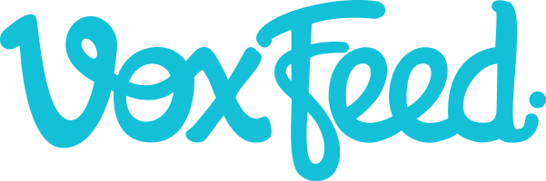

VoxFeed connects brands with the creators of the most influyent content in Latinamerica. I'm currently using Node.js, Express.js MongoDB and Ruby to create new features in the web platform and fix some casual bugs :)
Lot of fun here!
January 2016 - CurrentSoftware developer intern. In charge of mantain web applications and a .NET application used wide globally. The web technologies I mostly used were Golang and AngularJS. The .NET app was built in C# with a Microsoft SQL Server Database Engine. Also in charge of fix some SQL queries.
September 2015 - December 2015Software developer Junior. My role was to develop new features for an android application project called Busolinea. I used Java to build the back end, XML to build the graphic objects and a JSON Parser library to parse HTTP Responses from a web service. Learned a lot about an Activity Life-cycle. Eclipse was the main IDE.
More about AWS June 2014 - October 2014